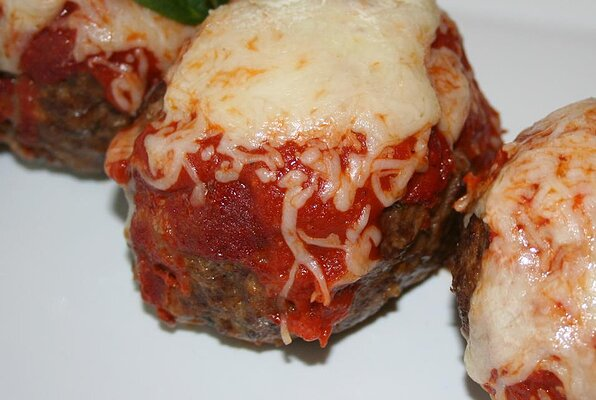

Italian Mini Meat Loaves
Italian Mini Meat Loaves

Description
Flavorful mini meat loaves with an Italian flair--moist and full of tomato and cheese goodness from fresh Classico Four Cheese sauce. Smothered in mozzarella cheese, these little meat loaves are sure to please!
Ingredients
- 2 tablespoons olive oil
- 1 pound lean ground beef
- 8 ounces bulk mild Italian sausage
- ½ cup diced white onion
- 1 (24 ounce) jar Classico® Fresh Four Cheese Sauce, divided
- 1 egg, lightly beaten
- ⅓ cup Italian seasoned bread crumbs
- ¼ cup shredded Parmesan cheese
- ¼ teaspoon garlic powder
- ½ teaspoon salt
- ⅛ teaspoon black pepper
- 1 tablespoon chopped fresh parsley
- 1 cup shredded mozzarella cheese
Steps
- Heat oven to 350 degrees F. Generously oil the bottom of a 9x13-inch baking dish.
- Mix together the ground beef and Italian sausage in a large bowl. Add onion, half of the jar of four-cheese red sauce, egg, bread crumbs, Parmesan cheese, garlic powder, salt, pepper, and parsley. Mix until well blended.
- Divide mixture into 4 oval mini loaves; place in prepared baking dish. Pour the remaining red sauce over tops of meat loaves.
- Spray the underside of a large piece of foil with nonstick cooking spray; cover dish tightly.
- Bake for 45 minutes. Uncover and sprinkle loaves with shredded mozzarella cheese.
- Increase the oven temperature to 400 degrees F. Bake uncovered until cheese is melted and the internal temperature reaches 165 degrees F, about 10 more minutes.
Back